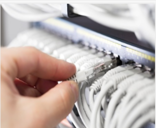

Câblage réseau informatique et télécom - Electricité courant faible & fort

Nos prestations en câblage réseau VDI
- Pré-câblage VDI (Voix Données Images) pour équiper vos nouveaux locaux
- Câblage réseau cat5,6,7,SYT,CR1,...
- Cuivre & Fibre optique
- Câblages et installation en électricité générale
Dés la conception, un grand soin est accordé aux choix des passages de câble, tant pour des raisons esthétiques, que pour réduire les coûts. Ensuite, que pour respecter les normes de sécurit (séparation forte des réseaux de détection d'incendie par exemple), que pour garantir le bon fonctionnement de l'ensemble (diaphonie qui perturbe les réseaux si les câbles réseaux longes des câbles de puissance électrique sur de grandes longueurs)